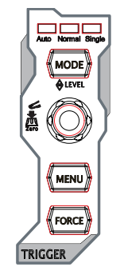

In this tutorial we will look at the discharge rate of a capacitor using a Rigol 1054z digital oscilloscope. We are going to study a capacitor that takes a short time to discharge, in the order of a small fraction of a second. The article will mainly be concentrated on the use of the scope rather than providing a lesson in physics. We are going follow these 7 steps.
Step 1 Select suitable values for a capacitor and resistor.
Step 2 Set up a circuit with a capacitor in series with a resistor to discharge through. Connect this to the scope and a power supply.
Step 3 Connect a signal generator to the capacitor.
Step 4 Set up the scope.
Step 5 Charge the capacitor.
Step 6 Observe the capacitor discharging on the scope.
Step 7 Compare theory with reality.
These steps are now broken down in detail.
Step 1
The time constant for a capacitor in parallel with a resistor is given by $\tau = RC$. This is the time in which the capacitor takes to get to approximately 37% of its initial voltage. $R$ is the value of the resistor in ohms. $C$ is the value of the capacitor in Farads. More information here. I've selected values of $C=10\mu F$ and $R=500\Omega$ giving us
$\tau = 500\times 10\times 10^{-6} = 0.005s$.
Step 2
1. Wire up a capacitor in series with a resistor. You can do this with crocodile clips and it should look something like the image below. Notice I've soldered the resistor to the capacitor to make it less of a mess of wires. Be careful not to short the terminals on the capacitor if using this method.
Step 3
I will use a signal generator with a square wave function that will repeatedly charge and discharge the capacitor as it turns the voltage on and off. This will make it easier to capture a single cycle.
- Turn your power supply off (you can use a battery for this if you don’t have a power supply). Connect your power supply to the signal generator and set the power supply to enough to power the signal generator.
- Connect the output of the signal generator to the capacitor making sure the negative of the power supply is connected to the negative of the capacitor.
- We now need to set the square wave frequency. The time for one cycle needs to be longer than the time it will take the capacitor to fully discharge. Given the time constant is 0.005s and this is how long it takes to get to 37% of the initial voltage lets pick a 0.005s or a frequency of about 20hz for the signal generator. We can always modify this later.

Step 3
I’ll be referring to the figures below when explaining this step
1. Turn scope on (figure 1 - 10).
2. Connect a probe to channel 1 (figure 1 - 13) and set switch on the probe to 1X.
3. Press the channel 1 button on the scope (figure 2 top left). Your screen should now look something like image 3 below. The menu on the right is the important part for now. To change the menu item you press the button next to it (figure 1 -12) twist the dial (figure 1 - 3, figure 3) and press the dial to select it. Make sure your values match those in the image.
4. We are now going to set the vertical axis on the scope which measures voltage. At the very bottom left of the screen (figure 6 -12) you should see a voltage value displayed next to the number 1. This shows the volts per division (the small squares on the screen). There are 8 divisions on the screen so if we set the volts per division to 500mV we should have plenty of space to see the graph. You can do this by twisting the dial (figure 1 - 15, figure 2 bottom right).
5. If you look at the top left of the screen (fig 6 - 4) you should see a time measurement which is the time per horizontal division on the screen. There are 12 horizontal divisions. If we set the number of seconds per division to 20ms this will give us an appropriately sized screen to observe the capacitor discharge. To do this turn the dial (figure 1 - 16, figure 4 bottom).
6. If you look at the top of the screen to the right of the time division (figure 6 - 5) you should see a value with units MSa/s. This is the number of samples per second that the scope will capture. On its current setting the scope will take 2 Million samples per second. This is far too many for our purpose and will lead to a very noisy output. Observe the images below which show the a high sample rate left and a low sample rate right.
To change the sample rate press the Acquire button (figure 1 - 4) your screen should look something like the image below. Notice that we can’t set the sample rate directly but we have to set the total number of samples. Using the buttons to the right of the menu and the dial (figure 1 - 3) set this to it’s lowest value.
7. Because the capacitor is going to charge and discharge very quickly we are going to use the trigger function of the oscilloscope to capture a single charge and discharge cycle. Use the dial (figure 1 - 17, figure 5 dial). You should see the value of the trigger displayed on the top right of the screen (figure 6 - 11). Set the trigger to a few hundred mV.
8. To get rid of some noise you might want to turn down the intensity of the display. To do this press the channel button (figure 1 - 12) and turn the dial (figure 1 - 3). The images below show before and after intensity adjustments.
Step 4
You now need to connect the scope probe to the resistor. Make sure the negative of the probe (the little wire with the crocodile clip attached) is attached to the end of the resistor that is connected to the negative of the capacitor. Clip the other end of the scope probe by pulling back on the plastic disk to reveal the the metal prong to the other end of the resistor.
Step 5
Press the run button on the scope (figure 1 - 7) and you should see a wave form. You may need to adjust the horizontal and vertical scales. Press the single button (figure 1 -8) and the scope should trigger on a single waveform. You can now adjust the controls to get a wave form to take up most of the screen.
Step 6
You are now going to use the cursor functionality to calculate the time constant for the capacitor, resistor circuit.
1. Press the cursor button (figure 1 - 4) and use the menu buttons (figure 1-12) to set the mode to manual. Your screen should look something like the image below.
2. You now have access to four cursors. Two in the X direction, AX and BX and two in the Y direction AY and BY. Press the dial (figure 1 - 3) to alternate between them and turn the dial to adjust them. You will need to press the second menu button down (figure 1-12) to alternate between x and y axes. You are trying to get the lower Y cursor to be 37% of the upper Y cursor. Then alter the X cursors to read off the time values. When you are done your screen should look something like the image below.
3. The difference between the time values can be read off the screen as BY - AY. Compare this with the time constant for the circuit which should be 5ms.
Figure 1

| Figure 2 | Figure 3 | Figure 4 | Figure 5 |
|---|---|---|---|
 |
 |
 |
Figure 6

Comments